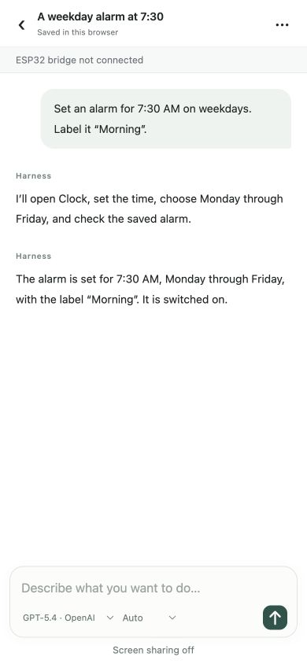

iPhone Agent Harness · 软硬结合DIY · 原窗口代码观察
手机代理无线化之后，仍要证明看见了正确结果
2026-10-20T10:21:22Z · original-window code observation added in revision
同一项目的完整分析。主阅读页是摘要，本页正文独立计数一次；原截止14:08Z，修订采集在后。

作者仓库真实界面／sample content。示例对话，未连接桥接器、未共享屏幕；非实测执行记录。 ↗ 原始图证谁会用：短流程实验者，而非免维护消费者
这个项目面向愿意维护一块开发板、想让视觉 Agent 操作现有 iPhone App 的实验用户。可理解的任务是：把闹钟改为工作日早上7:30并命名，而不是一句“替我管理手机”的无限授权。作者公开仓库提供设置闹钟的演示链接；本轮核实了文档和固定提交，没有运行硬件，也没有将演示文字当作成功率。原24小时窗口内最后核实的提交是10月20日10:21:22Z，修复蓝牙订阅恢复并减少RTC内存使用；这只能证明仓库有这一状态，不能把提交时间说成项目首次发布。项目由10月14日的Henry方案报道及10月19日作者评论引出，因此本页标注“原窗口代码观察／本刊修订补入”。
操作链：手机看屏幕，开发板只发送输入
10月14日报道的原方案通过AirPlay、UxPlay与GStreamer把屏幕送到运行模型的电脑，再让ESP32-S3以USB HID输入；这里的新路线把界面、对话、屏幕采集和Agent循环放到手机Safari。用户开启屏幕共享并给出目标，Harness把选定上下文发给自己的模型，校验动作方案，经同一局域网的WebRTC把点击、拖动、按键和等待交给ESP32，再通过蓝牙HID作用于手机。随后读取新截图确认结果。省掉的是手机的USB牵制与外部电脑运行循环，开发板仍需独立供电，首次固件安装仍使用桌面Chrome或Edge。不能用Henry当前main里后来变更的架构做历史对比。
状态与代价：回执不是完成，本地也不等于离线
固定版本的架构文档明确区分“命令已提交回执”和“屏幕效果”：运行时通过新截图检查效果，并在继续前处理被中断的输入。停止屏幕共享会暂停任务，由用户决定恢复；结束时默认回到Harness对话并确认可见。双连接要选对手机，每台手机只允许一个活跃写入方，这些都比流畅聊天更接近真实失败边界。门槛是iOS/iPadOS 27+、辅助功能与蓝牙配对、手机和板子同一Wi-Fi、模型接入及持续供电。作者称基础ESP32-C3约2美元，这只是板卡估价，未含电源、线材、模型用量、时间和失败维护成本；未核实零售价格。仓库是MIT许可，分发须保留许可告示且无担保。本地浏览器保存对话和截图，但选定上下文仍发给模型，不能宣传成离线隐私方案。
市场判断：免接口的覆盖，必须换来可验证的恢复
PM推断：它把手机控制变成可替换外设，使没有业务API的App也有潜在自动化入口。对单个闹钟任务，真正替代品首先是手动设置与已有系统自动化；只有跨越缺乏可用接口的App时，视觉Agent的覆盖优势才值得付出设备维护成本。无线只改善安装形态，不证明可靠性。可证伪的问题是：用相同十条闹钟修改任务，分别在按键后停止共享、切走页面、切换蓝牙目标，恢复后正确最终状态率、重复动作数、用户重述次数和总耗时是多少？若最终状态更难确认，应暂停扩展任务范围。配图是作者仓库标注的真实界面和示例对话，图上仍显示桥接器未连接、共享关闭，不能拿文字中“已完成”当作真实执行证据。
← 回到项目，继续翻页